Getting started
Requirements #
- Node.js 22.12 or newer
- A JavaScript or TypeScript project that uses Jest, Vitest or
node --test(several runners and several projects in one repository are fine) - Git is optional; without it SmartTest uses local snapshots
Install #
SmartTest is not on npm yet. Build the package from this repository and install the tarball:
git clone https://github.com/RemiPelloux/SmarttyTest && cd SmarttyTest
corepack enable && pnpm install && pnpm build && pnpm release:pack
# in your project:
npm install -D /path/to/SmarttyTest/packages/cli/.publish/smarttest-0.8.0.tgzIf your repository has no root package.json (several independent projects), add a minimal one for repository tooling, as LeadsIt does.
Set up #
npx smarttest init --dry-run # print the plan and the diff of every file
npx smarttest init --yes # apply itExample output on a repository with three runners:
Detected: Wasp + React + Express + Prisma + TypeScript + Vitest + Jest + node:test · npm · 6 independent projects · Git
Recommended
Test layout colocated (63% of existing tests follow this convention)
Adapter vitest, jest, node (existing runner configuration is reused as-is)
Impact mode balanced
Skipped tests backend/**/*redisJobQueue* (your existing test commands skip these, so SmartTest does too)
Git hook smarttest run --staged (.husky/pre-commit runs 3 full suite(s); one affected-tests run can replace them)
Changes
+ smarttest.config.ts SmartTest configuration
~ .gitignore ignore local SmartTest stateRunning init again changes nothing. npx smarttest init --rollback restores the files it changed, unless you edited them since.
Run #
npx smarttest run # affected by uncommitted changes
npx smarttest run --staged # affected by staged changes, for a pre-commit hook
npx smarttest run --base main # affected by the current branch
npx smarttest run --all # everything
Check the selection #
npx smarttest explain <test> # why it ran or not
npx smarttest explain <file> # which tests cover a file
npx smarttest validate-selection # run selection and full suite, compare
npx smarttest benchmark --commits 20 # replay history: full run vs SmartTest, misses re-checked
npx smarttest shadow # full suite next to the selection, recorded over time
npx smarttest graph why <from> <to> # shortest dependency path between two places
npx smarttest doctor # runners, discovery, index, configurationRecord what each test runs (optional) #
npx smarttest trace # runs each test file once with V8 coverage (about one full run)
npx smarttest trace --status # how many traces are still fresh
npx smarttest trace --stale # refresh only the stale onesWith fresh traces, a test that can reach a change on paper but never ran the changed code is skipped in FAST and BALANCED mode. See runtime evidence.
Use it in a Git hook #
init plans this for you. To do it separately:
npx smarttest hook status # which hook manager, and which steps run whole suites
npx smarttest hook install --replace # add SmartTest, comment out the full-suite steps
npx smarttest hook uninstall # remove it and restore those stepsIt works with husky, lefthook, simple-git-hooks and plain .git/hooks. The hook runs npx --no-install smarttest run --staged --non-interactive.
Use it in CI #
npx smarttest ci # picks the base for merge requests and branch buildsReports and generated tests #
npx smarttest report --open # HTML report of the last run
npx smarttest generate --dry-run # missing test files as it.todo scaffoldsNext: how selection works, runtime evidence, CLI reference, configuration, running in CI.